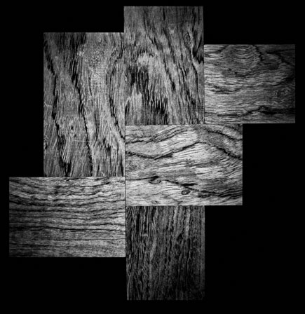

选材

选材
精选柚木、花梨等名贵木材，挖掘利用其天然特性与优点，确保每一件产品在加工制作中焕发出新的生命力。
花梨材质硬重，密度高。木纹清晰，结构细而匀，通体有优美的虎皮纹理；木纹呈暗红色；木头散发迷人香味，其香悠远醇厚，不张扬，可舒张血脉，缓减情绪压力与疲劳。花梨木的使用历史悠久，深受明清文人士大夫推崇，现产量稀少，是不可多得的具有收藏价值的贵重名木。
柚木由于其特殊的网状微针孔结构，稳定性强、不易变形，能适应不同强度的干湿变化，并具有上佳的耐水、耐火、耐腐性，综合表现出色，是世界公认的名贵树种。柚木中含有的油质，使其带有一种特别的香味。刨光面通过氧化呈金黄色，色泽随时间弥久更显沉稳与美丽。除却功能上的优势，其美学价值亦弥足珍贵。